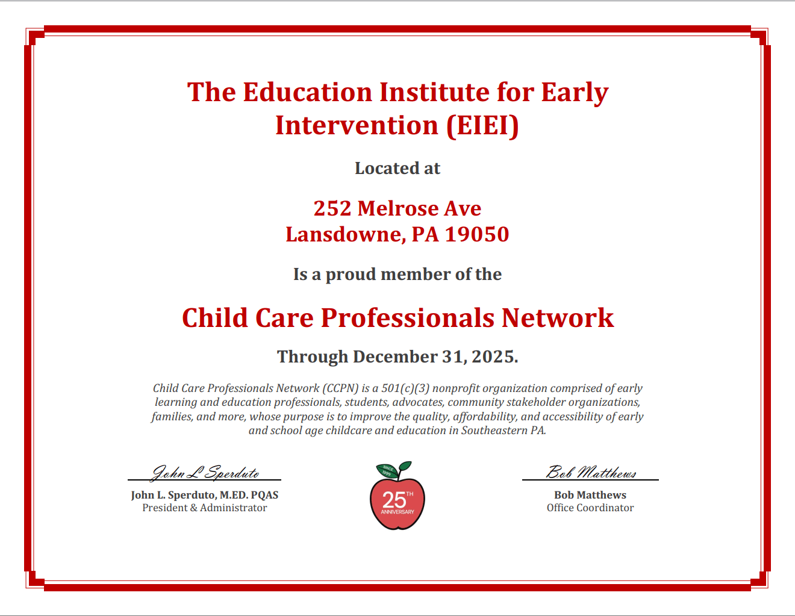

Year in Review 2019-2022
Years Combined Due to Covid-19
Grants Awarded
- Pre-K Counts Lead Agency ($700,000) - 2022-23
- Pre-K Counts Lead Agency ($175,000) - 2021-22
- William Penn Racial Equity Grant ($35,000) 2021-23
- PHMC-PDO Professional Development Grant ($75,000) Year 1
- PHMC-PDO Professional Development Grant ($83,000) Year 2
- PHMC-PDO Professional Development Grant ($83,000) Year 3
- Today’s Child Teacher Certification Observer ($3,500) 2020-2022
- Service-Learning Grant to Early Childhood ($500)
- Amidpues ($2,000)
- CARES Act ($23,000)
- Philadelphia Works Contractor
- CareerLink Approved Workforce Provider
- Elwyn Professional Development ($3,000)
- First-Up - National Association for Family Childcare Providers ($1,000)
Training Provider
- PA State ACT 48 Provider
- Pennsylvania Quality Assurance System (PQAS) Provider
- CDA Self-Paced Course Completed
Awards to CEO Dr. Allen-Presley
- Widener University, “2021 Fitz Dixon Innovation in Teaching Award Group Award”
- Ball State University, “2019 Inaugural of Excellence Alliance for Community Engaged Teacher Preparation Institute.”
- PennNAEYC, “2019 Voice of Children” State Award, Pennsylvania
- Continental Societies, Inc “2019 Essence of Woman” Award. Metropolitan Philadelphia Area Chapter
Publications
- Allen-Presley, E., Alveraz, B., McHenry, N. (2021). Equalizing Power University – School – Community Partnership – Shared Power, New York City, NY: Teacher College Press
- Allen-Presley, E., Feyock. A., Lesher. A., (2019). Preparing Tomorrow’s Special Education Teachers Today. Widener Insider, Widener University Press
Conferences
- Bethel Deliverance Educational Conference
- Council for Exceptional Children; Division of Early Childhood
- National Association for Family Childcare (NAFCC)
- Kappa Delta Pi International Conference
- Ball State University Community Engaged Teacher Education Annual
National Appointments
- Association of University Centers on Disabilities (AUCD) Emerging Leaders Advisory Group
- Early Childhood Personnel Center (ECPC) & Division for Early Childhood (DEC) Early Childhood Leadership Cohort
Community-Supported Activities
- Supported 6 Black Authors (by purchasing their books)
- 34 Special Education Workshops
- Several different local and state workshops
- Started the Chester Childcare Alliance
- Career Fair (Hosted by Delaware County Career Link)
- Social Emotional Learning
EIEI Awards

Child Care Professionals Network (CCPN) Membership Certificate